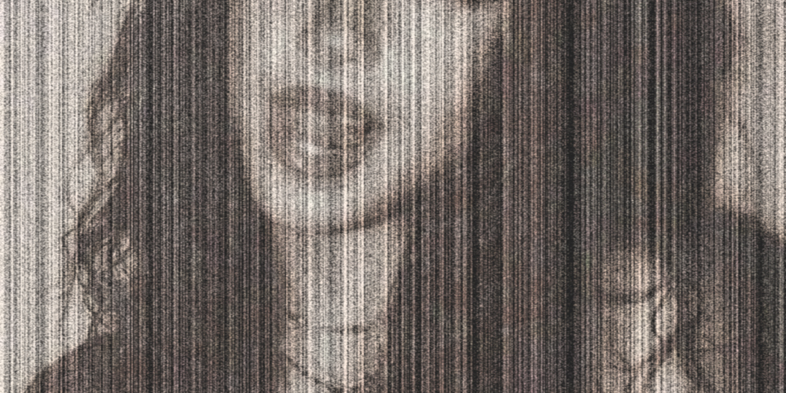
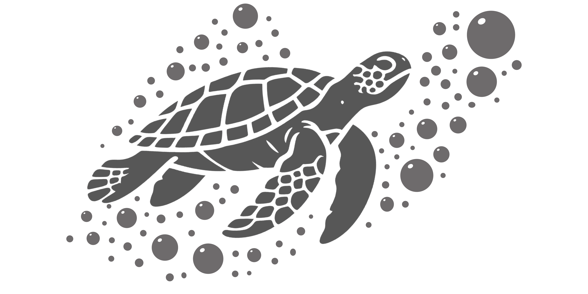
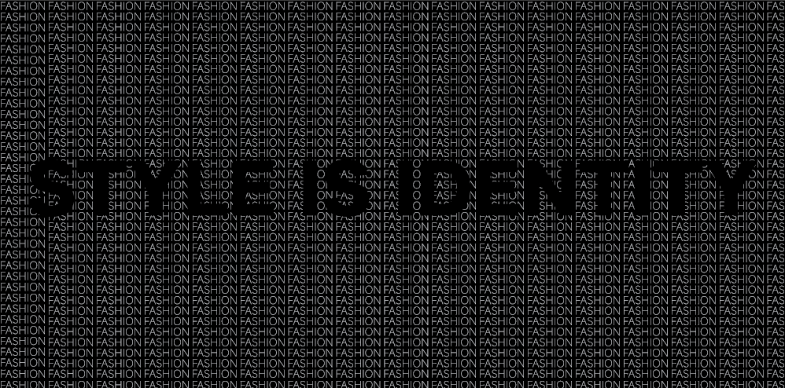

Welcome to .R

<> 現代はファッションが自分らしさを表現する大切な手段となっています。.Rでは、季節や流行に合わせたコーディネートやおすすめアイテムを紹介し、毎日の服選びがもっと楽しくなる情報を発信しています。ファッション初心者の方から、おしゃれをもっと楽しみたい方まで、誰でも参考にできるサイトを目指しています。自分にぴったりのスタイルを見つけて、自信を持って毎日を楽しみましょう。


<> 現代はファッションが自分らしさを表現する大切な手段となっています。.Rでは、季節や流行に合わせたコーディネートやおすすめアイテムを紹介し、毎日の服選びがもっと楽しくなる情報を発信しています。ファッション初心者の方から、おしゃれをもっと楽しみたい方まで、誰でも参考にできるサイトを目指しています。自分にぴったりのスタイルを見つけて、自信を持って毎日を楽しみましょう。.Rは、ファッションをもっと身近に感じてもらうためのWebサイトです。流行のコーディネートや季節ごとのおすすめアイテム、着こなしのポイントなどを分かりやすく紹介しています。毎日の服選びに迷った時や、新しいスタイルに挑戦したい時に役立つ情報を発信していきます。
初心者でも気軽に楽しめる内容を目指し、見るだけでファッションが好きになるサイト作りを心掛けています。
Update: Permanent
毎週注目されている人気アイテムを紹介します。ブランドや価格、購入できるショップだけでなく、おすすめの着回し方法やコーディネート例も掲載しています。トレンドを取り入れながら、自分らしいファッションを楽しめるようサポートします。
Update: Once a week
テーマを選んだら、おすすめのコーディネートやアイテムをチェックしましょう。気に入ったファッションを見つけたら、お店やオンラインショップで購入して、自分だけのおしゃれを楽しんでください。.Rは毎週新しい情報を更新しています。
Update: Once a month